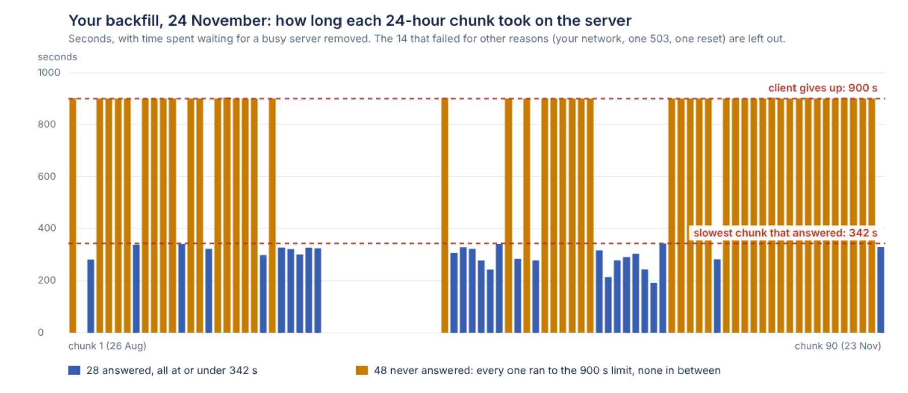
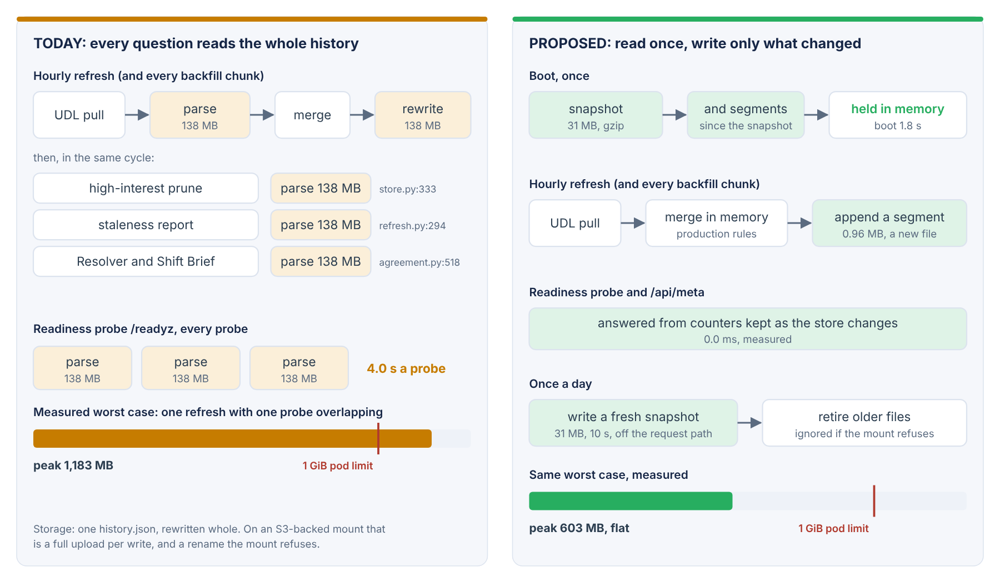

PSIRENS keeps its whole 90-day history in one JSON file and reads or rewrites all of it to answer almost everything: every pull, every refresh, every readiness probe, every /api/meta. The proposal is to decode the history once at start, hold it, and write down only what each pull changed, as a small new file. The merge rules stay exactly as they are; the same production functions do the work.
Four decisions in the form at the foot of the page: go or no-go, how often to compact, whether to keep the old file current for rollback, and one fact only you can give me, where the store lives in the deployment.
FACTFrom the code. One hourly refresh parses the whole store at least four times and writes it once in full: the merge (store.py:395), the high-interest prune (store.py:333), the staleness report (refresh.py:294), and the resolved view that every route and the Shift Brief read (agreement.py:518). A backfill chunk does the same.
FACTEach call to /readyz or /api/meta parses the whole store three times: health() reads the newest epoch directly, then twice more through the staleness check. Measured on a store at the retention cap: . per probe. The platform probes /readyz (recorded in CONTEXT-001); how often is TBC.
FACTMeasured worst case: one hourly refresh with one readiness probe overlapping it peaks at ., over the pod's 1,024 MB. The test store is 597 objects at the 2,000-sample cap. INFERENCEThe live store is near that cap: your inspector screenshots showed about 1,900 samples on single objects.
FACTWhen the platform's file-storage add-on is attached, the store goes to its mount (config.py:189). That mount is Mountpoint for Amazon S3. It refuses renames, refuses overwrites and deletes unless the platform mounted it with the allow-overwrite and allow-delete options, and only allows sequential writes to new files (Mountpoint semantics, troubleshooting). Today every write is a full upload of the file, after a rename the mount refuses. Whether the add-on is on, and with which flags, is TBC (question 4 below).
The probe interval is the platform's setting and I do not know it. Move the slider; the figures use the measured times above. INFERENCEParse time is taken as proportional to store size.

Press the numbered points for what each part does.

prototype/results.json. There is no interface change, so there is nothing to mock up.history.json is adopted once (.) and left in place._merge_object, _retain_elset, _retain_candidates, unchanged), then write one new segment holding only the samples, element sets and fields that changed./api/meta: the newest epoch is kept as the store changes, so health costs nothing.FACTEach scenario ran in its own process on the same 597 by 2,000 store, so each figure is that scenario's alone. Bars are drawn against today's value in each row.
| Scenario | Today | Proposed |
|---|
LIMITAt rest, between refreshes, the two hold about the same (. today, . proposed): today already keeps the resolved view, and the proposal keeps the decoded store. The gain is the end of the peaks, not a smaller resting size. Cutting the resting size too is possible with a compact in-memory layout; I have not measured it and it is not part of this proposal.
FACTprototype/equivalence.py runs the production store and the ledger through the same 40 pulls and prunes. After every step it compares the two stores, and a fresh boot of the ledger from disk alone, which is what a restart would see: 160 checks, all equal. The run exercises every merge rule: new samples, re-pulls, filling a missing field, adopting untagged legacy samples (571 of them), age pruning, the per-object cap, object deletion and compaction part-way through. It refuses to pass if the legacy or enrichment paths were not exercised.
FACTThe proof goes red when the ledger is broken. Three deliberate faults each failed it at the first or second pull with "a restart would see a different store": recording only new keys, so a filled field is lost; ignoring removals; replaying without the prune or the length check.
allow-delete option; without it they are never read again but use quota (one day of segments is about .).history.json. Question 3 offers to keep that file current once a day, so going back to 1.7.12 would lose at most a day.store.py behind the same methods, so routes, events and the SPA are untouched. Health, the Resolver and the event cache read counters instead of the file.tests/, plus a red case for each guard, run in the golden loop. A daily compaction step in the scheduler, off the request path./api/meta gains a store block: snapshot age, segments since it, last write in bytes, boot seconds. This is so the change can be checked live rather than taken on trust.